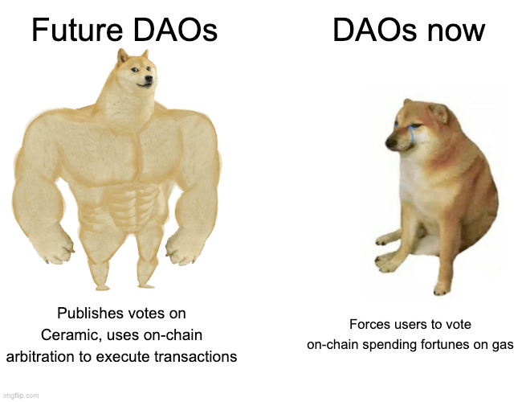

Credit to Joel Thorstensson
Existing Decision-making Tools
In this MoneyLab Berlin talk [youtube.com], Ruth Catlow, co-founder of Futherfield [furtherfield.org], has found that most DAO (Decentralized Autonomous Organization) decisions are made off-chain and then ratified using the DAO structure. In her opinion, the DAO voting mechanism needs to capture more information about how decisions are being made. The voting needs a more "transparent map-of-power".
Several groups have experimented with advanced forms of governance and voting.
Quadratic Voting: Gitcoin Grants [gitcoin.co] was one of the first to experiment with quadratic voting as defined in "Liberal Radicalism: A Flexible Design For Philanthropic Matching Funds" [ssrn.com] (Buterin et al, 2018) to fund grants. This design allows small donations from multiple individuals to generate a large amount of matching funds during a funding round.
Dandelion Voting: On-chain voting mechanism where voting power is based on the number of tokens held by the voter, also known as token-weighted voting. See more from Token Engineering Commons [gitbook.io], 1Hive Dandelion Organization [1hive.org], and the 1Hive repo [github.com].
Disputable Voting: On-chain voting mechanism that includes delegating votes and a mechanism for disputing proposals. See more from Token Engineering Commons [gitbook.io] and the Aragon repo [github.com].
Conviction Voting: On-chain voting mechanism that allows users to assert preferences for a proposal on a continuous basis. Conviction to a proposal is calculated on the length of time a voter has kept their preference for a particular proposal. See more from Token Engineering Commons [gitbook.io], Aragon Conviction Voting repo [github.com], and 1Hive DAO with Conviction Voting [1hive.org].
Off-chain Voting: Includes Token Log, Emoji Voting, Forum Voting, and Advice Process.
Off-chain Conviction Voting Prototype
Conviction voting is very close to the voting mechanism we'd like to use for Dynamiculture. On-chain conviction voting allows members to stake their organization's tokens on proposals. If the proposal has enough conviction for the funding requested, it will pass.
Joel Thorstensson and Ceramic Network [ceramic.network] offered a GitCoin GR9 Hackathon Bounty to "Build a POC for off-chain conviction voting with Ceramic". They put together a thorough design document, "Trust minimized, off-chain conviction voting" [ceramic.network] (2021) from which we built a prototype system.
It's off-chain, so decision making can happen without staking funds. Much of the proposal data is held on Ceramic network's sidechain and anchored on the blockchain. By storing some data off-chain, the organization is not limited by blockchain gas fees and can collect more information about the proposal using verifiable data structures managed by Ceramic and IDX.
Prototype Diagram

Starting from the bottom of the diagram, the blockchain hosts:
- ERC20 contract for the organization
- token holders as organization members
- organization contract owner with the DAI funding pool
The Ceramic Network contains:
- schemas controlled by the snapshot service user
- a single conviction state document controlled by the snapshot service user
- member proposals controlled by members that create them
- user conviction documents mapped to each member using IDX
The Graph [thegraph.com] determines the token holders' ethereum addresses for the snapshot service. The bootstrap script is run once to set up the schemas and initial conviction state document. The snapshot service runs regularly to update the conviction state document based on the member's convictions. Our dapp authenticates to Ceramic using the member's wallet and allows the members to create proposals and update their conviction documents.
dapp User Interface

Future Plans
Later this year we hope to expand the prototype to support multiple types of tokens within an organization:
- Air Tokens
- Biodiversity Tokens
- Carbon Tokens
- Culture Tokens
- Food Security Tokens
- Affordable Housing Tokens
- Soil Tokens
- Water Tokens
A member who has expertise in water management would have more water tokens than other members. Additionally, performing services for the community like building a water harvesting project or maintaining the water dashboard for the community allows the member to augment their water token holdings. We'd like to also implement a mechanism for losing tokens similar to "reputation decay" as defined by colony.io whitepaper (PDF).
Conviction voting would allow members with reputation to have commensurate influence when reviewing proposals that affect resources in the community.